An assortment of things I have drawn. I'm not yet ready to admit to the amount of Skrillex fan art I have drawn, so please do not ask for it.
Williams üôè
******** 6, 2023 to December 6, 2023

Kinoko Juice Shizuku. Copic.
June 13, 2023
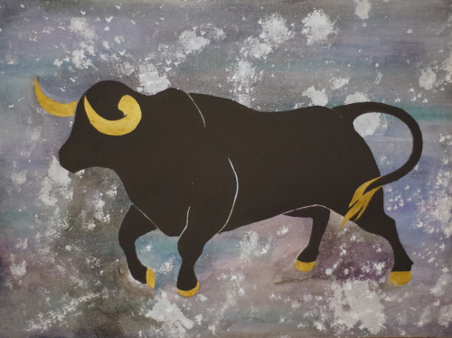A birthday gift for my coworker! She requested her astrology sign. Gouache and acrylic.
April 23, 2023
Mother SD better bless me next lottery for this.
March 27, 2023 to April 10, 2023

Commemorative art for the 9th anniversary of hat. Only true hats will understand every reference. Herbin cacao ink, prismacolor colored pencils, white acrylic ink.
November 30, 2022
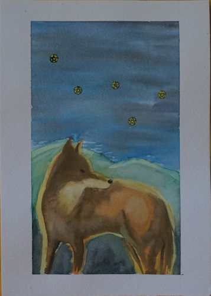A painting for my coworker! Watercolor.
July 24, 2022
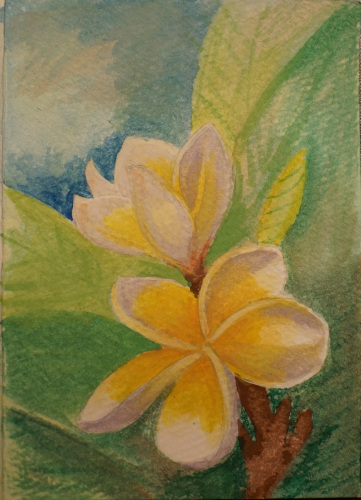Another plumeria! This one was painted on a card for my mother's birthday. Watercolor.
July 22, 2022
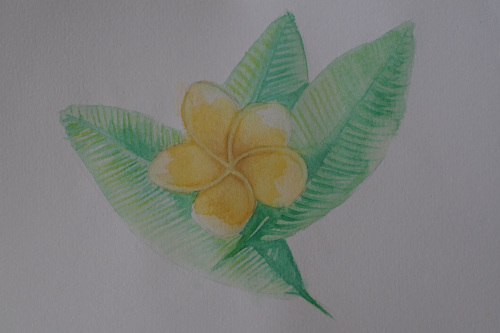Painted as practice. Was meant to be dropped off in an art trade box downtown, but it's never out when I walk by! Watercolor.
July 16, 2022
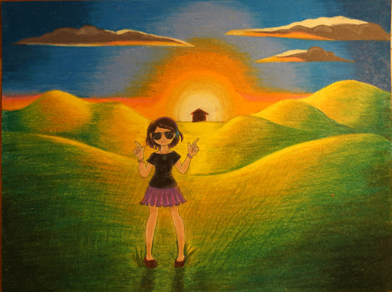"Klara and the Sunglasses". A request from Ryan for his birthday. Colored pencil.
July 12, 2022
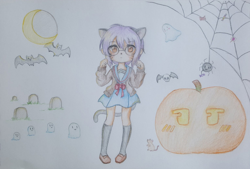Spooky Yuki Nagato art! I drew this for Flan for repayment for my Nintendo Switch Online subscription.
October 5, 2019
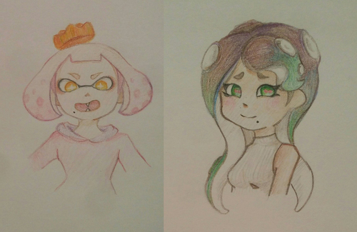Marina and Pearl! I love them!
June 17, 2019
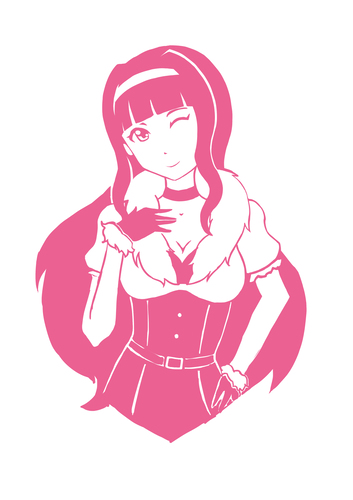I'm sure I drew this Overmaster Takane Shijou for Ryan's birthday but the dates don't line up so idk.
November 13, 2015
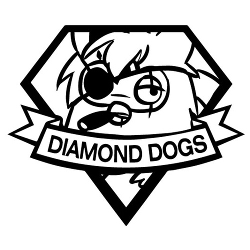Walgreens was having a cheap custom mug sale and I took a sketch of big boss as a furby and had it printed for like $5.
October 26, 2015
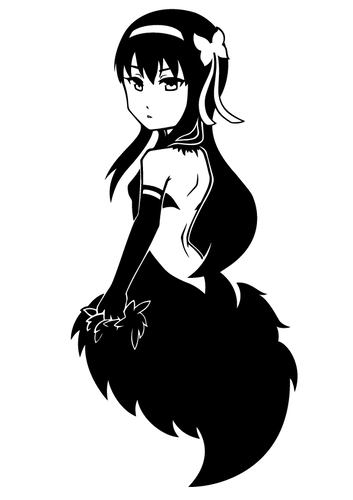I drew this 3rd movie Homura Akemi for my friend faiin who paid for me to go to Sakuracon 2015 and AX 2015 as a thank you. I had it printed on a shirt thanks to teezy!
April 11, 2015

A sketch of my idol dream team, Iori Minase and Yayoi Takatsuki.
August 12, 2014
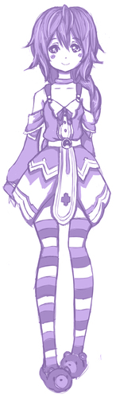Pururut is cute!
August 1, 2014
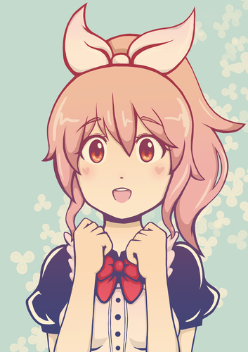The main art for my old webpage. It's dead and I won't link you to the archive. It's Nana Abe from IMAS CG.
August 3, 2014
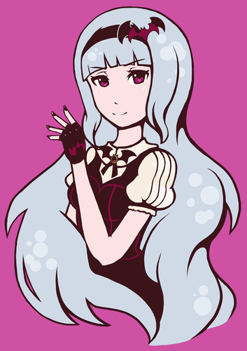Takane Shijou drawn with the intention to make a vinyl decal tshirt in mind for Ryan's birthday. I had teezy print it on a black shirt with white vinyl.
July 7, 2014
Another attempted sticker design of Iori Minase. Just for fun though.
July 7, 2014
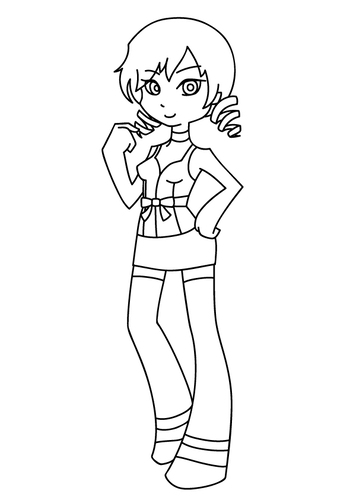I attempted (and failed) to design a vinyl sticker for teezan's vinyl shop because a customer requested Catherine in PSG style. Didn't get paid for it.
May 3, 2014
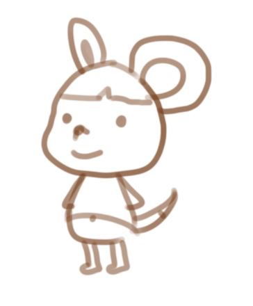my favorite vegetable mouse
August 2, 2013

I'm not really sure what inspired me to digitally paint a tit but I did
February 28, 2013
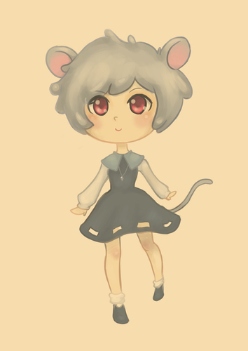A tiny clever commander.
January 7, 2013
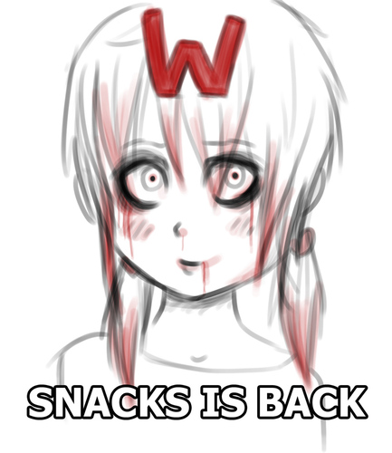A zombie snacks-tan for a midnight snacks stream.
October 9, 2012
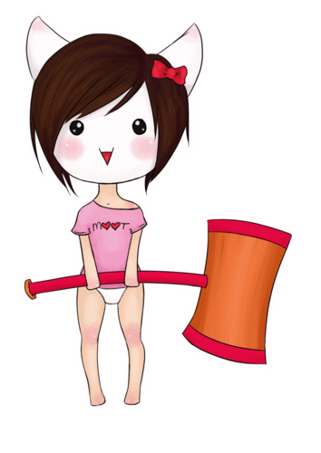moot-tan
August 5, 2012
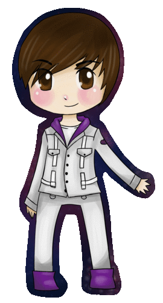Justin Bieber
June 5, 2012
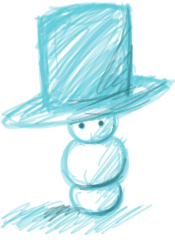I watched another student make a snowman in my 3D animation class and this was my rendition of it.
December 16, 2011
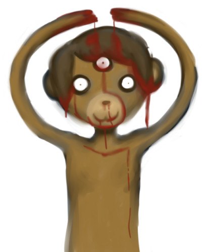what in the fresh hell is this
August 21, 2011

Inspired by The Weekend is Coming by sasakure.UK.
May 1, 2011
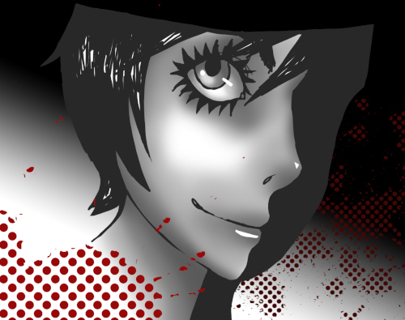A Clockwork Orange fanart
April 28, 2011
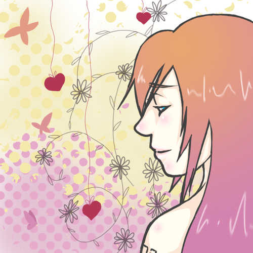Inspired by Wanderlast by sasakure.UK. I was very upset when it wasn't accepted into a deviantart group.
April 7, 2011
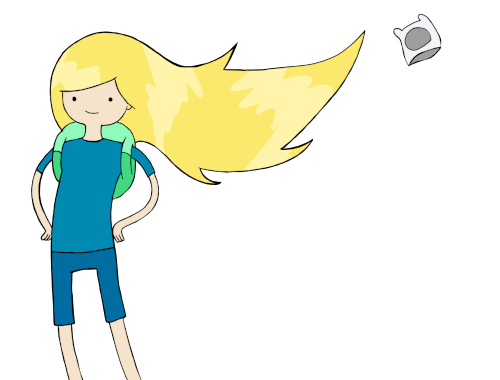his hair is inspiring
February 16, 2011
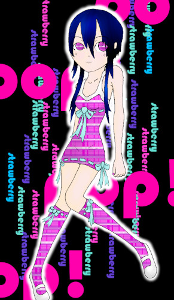"strawberry pop"
August 10, 2008
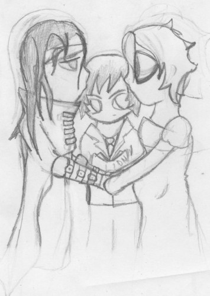Light Yagami with his death note marrying Vincent Valentine and mpreg L. What inspired me to draw such a thing??
July 26, 2007
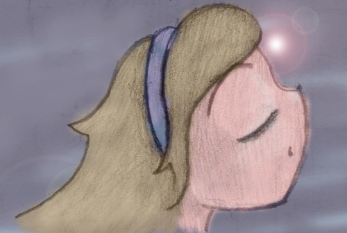"lens flare girl"
June 8, 2007

Devilish art of my OC Razz made for 06/06/06.
June 6, 2006
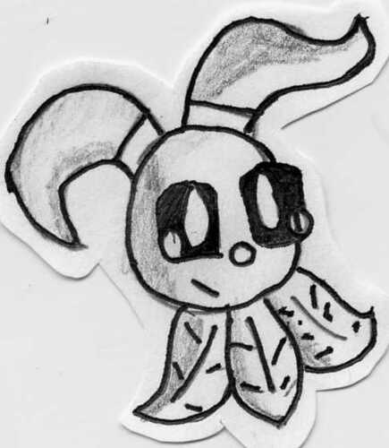One of my neopets.
July 5, 2004
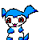Demiveemon icon
May 09, 2004
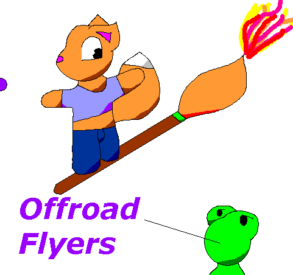Cover art for a game I never made. Drawn with a mouse in MS paint.
2003?
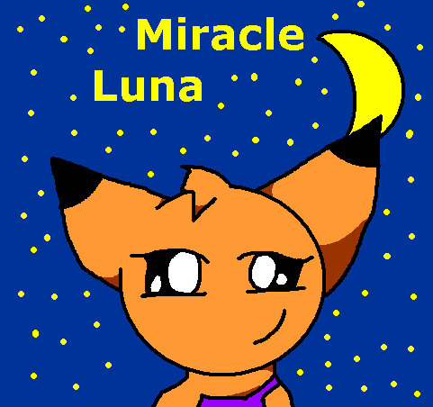Another cover art for a game never created. Probably was a Harvest Moon rip off.
2003?
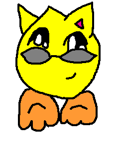A stylin Jub Jub neopet.
November 17, 2003